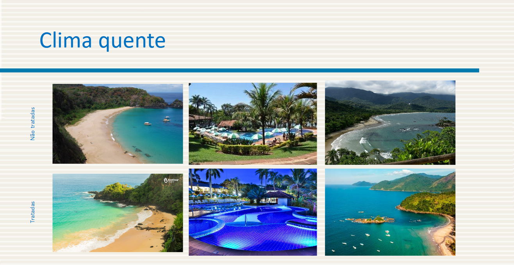

Seminário 1
Parte 1 - Testes de Acuidade Visual na Comunidade Externa:
Para a realização dos testes, foi proposto uma pesquisa na qual os participantes iriam reagir dando preferência à fotos de locais turísticos. Foram mostradas duas fotos de um mesmo ambiente, sendo uma tratada e a outra não. As fotos tratadas eram mais trabalhadas em cores e composição. Para ter uma maior abrangência, foram 3 locais frios e 3 locais quentes. Além disso, a pesquisa buscou saber qual era a preferência de clima para viajar e a faixa etária dos participantes.
Abaixo temos os resultados de faixa etária e preferência de clima, depois temos as imagens de todos os locais e quais foram as preferências.
Preferências de climas e de fotos



Parte 2 - Como o tratamento de imagens influencia na decisão de compra de viagens e hospedagens
Descrição
O impacto da fotografia
O estudo analisa o impacto da utilização de fotografias no marketing digital e e-commerces em geral, mensurando quantitativamente alguns fatores considerados importantes tanto para clientes quanto para donos de comércio.
O intuito era verificar o quanto donos de comércio investem em fotografias para vendas online e em redes sociais, bem como a importância dada pelos clientes por material fotográfico profissional e bem pensado na hora de tomar a decisão de realizar uma compra online.
Algumas estatísticas são mostradas a seguir:
Pode-se perceber que a maioria dos clientes se sentem influenciados por imagens no momento da compra de um produto, sendo esse o principal fator de decisão, mais até que avaliações de outros clientes ou o preço.
Além disso, pode-se perceber também que os clientes tendem a preferir fotos com um investimento de produção, ou seja, se sentem mais compelidos a comprar algo que tenha um investimento na produção, mesmo que não pareça com a realidade. O simples fato de ter uma foto bem produzida indica que o estabelecimento teve profissionalismo nessa parte e se torna mais confiável para clientes. O resultado disso são os últimos gráficos, nos quais a maioria das pessoas afirma que se sentiram decepcionados com alguma compra e a maioria não tem tanta confiança em compras online por conta disso.
Estudos relacionados a Formação de Imagem de Locais Turísticos
Alguns estudos acadêmicos abordam a forma de como é formada a imagem de locais turísticos no imaginário coletivo. É interessante de se observar que estudos mais antigos
relatam a forte presença do cinema e da mídia impressa como formador da imagem de determinados locais turísticos, e possíveis locais de visita.
Estudos mais recentes abordam como as redes sociais têm influenciado na formação de imagem dos locais, como apresentado abaixo.
Fotografias de viagens nas redes sociais: um estudo sobre os efeitos da visualização de fotografias na imagem do destino e na intenção futura de visita.
Disponível em: https://lume.ufrgs.br/handle/10183/127234
O estudo aborda justamente como as redes sociais têm esse impacto na formaçao de imagem dos locais, e como inclusive esse processo ocorre inclusive durante e após uma viagem ao local.
Na tabela abaixo, retirada do estudo, observamos como outros autores abordam o mesmo tema e quais as fontes de informação de estudos precursores ao de Danielle.
Por fim, podemos destacar um trecho do estudo que relata esse fenômeno de forma precisa:
"“Como o processo de formação da imagem do destino turístico é algo dinâmico (isto é,
altera-se ao longo da experiência de viagem), a imagem do lugar não é apenas uma variável
interveniente no processo de decisão de compra, mas também exerce influência sobre o
comportamento do turista durante e depois da viagem.”
Alem disso, no estudo é abordada de forma significativa o impacto das interações entre as pessoas, fator inerente às redes sociais e que não está presente nas outras fontes
anteriores de formação de imagem, têm um impacto também neste processo.
Funciona basicamente utilizando uma haste com uma agulha em uma ponta e um imã dentro de um recepiente com espiras na outra.
A forma de onda do áudio gravado é literalmente impressa no disco em uma espiral de 6 micrômetros. A agulha é sensível às variações de movimento, o que faz o imã na outra extremidade se movimentar e gerar um sinal elétrico que depois é transmitido em um aparelho de som.
Existem três tipos de modulação (maneiras de se imprimir a onda) para o vinil: Vertical, horizontal e ambas combinadas. A combinação das duas possibilita o som estéreo.

Para modulações mono, isto é, de apenas um canal, a função de onda é apenas uma e é considerada como vertical ou horizontal dependendo do tipo de modulação:
f(t) = y(t) - modulação vertical
f(t) = x(t) - modulação horizontal
No caso da modulação estéreo, a função g(t) final é dada por uma combinação linear de dois vetores. No caso de áudio, um representa o lado esquerdo e o outro o direito:
g(t) = [x(t), y(t)] em que:
x(t) = L(t0 - R(t);
y(t) = L(t) + R(t)
CD
O CD é uma mídia de armazenamento de música, que surge, principalmente, para substituir os discos de Vinil na indústria fonográfica.
Os primeiros Projetos que originaram essa mídia surgem na década de 70, em uma parceria entre as empresas Phillips e SONY.


 MP3
MP3
O conhecido codec MP3 é um exemplo de uma técnica de codificação com perdas. Todas as técnicas de compressão do MP3 removem o áudio de fora da faixa de áudio de um humano normal e arrumam a quantidade de compressão por meio do ajuste da taxa de bits efetiva do codec MP3 ou da quantidade de bits por segundo para armazenar os dados do áudio.

Por exemplo, um CD estéreo que usa PCM linear de 16 bits tem uma taxa de bits efetiva de: 1441 kbps. A compressão do MP3 remove esses dados digitais usando taxas de bits, como 320 kbps, 128 kbps ou 96 kbps, por exemplo, com a degradação resultante da qualidade de áudio. O MP3 também é compatível com taxas de bits variáveis, que podem comprimir o áudio ainda mais. Ambas as técnicas perdem informações e podem afetar a qualidade. A maioria das pessoas consegue distinguir entre 96 kbps ou 128 kbps de música MP3 codificada, por exemplo.
Streaming
O melhor codec para streaming de áudio é o AAC+.
Este codec usa menos banda para entregar áudio de qualidade superior ao MP3 e é suportado em todas as plataformas.
Este formato é uma extensão do AAC convencional, que foi criado para ser uma sucessão do MP3, ele é otimizado para uso em aplicações de baixa taxa de bits, como a transmissão de áudio. Ele usa a tecnologia de Réplica de Banda Espectral, para ressaltar os codecs de voz e também a eficiência da compressão.

Além disso, para aumentar a eficiência da compressão de estéreos, ele utiliza ainda o PS (Parametric Stereo, traduzido, Estéreo Paramétrico). Este formato normalmente é suportado por dispositivos (portáteis e não portáteis) e softwares que também são capazes de compreender o AAC convencional.
A taxa de compressão no AAC é de 96 Kbps e oferece a mesma qualidade que o MP3, com compressão de 128 Kbs. Isso significa que os arquivos AAC têm melhor qualidade e menor tamanho.
Referências:
A. J. Viterbi, "When Not to Spread Spectrum - A Sequel". IEEE Communications Magazine, 23(4):12-17 (1985).
"Introdução a codificação de áudio". Google Cloud, (2022).